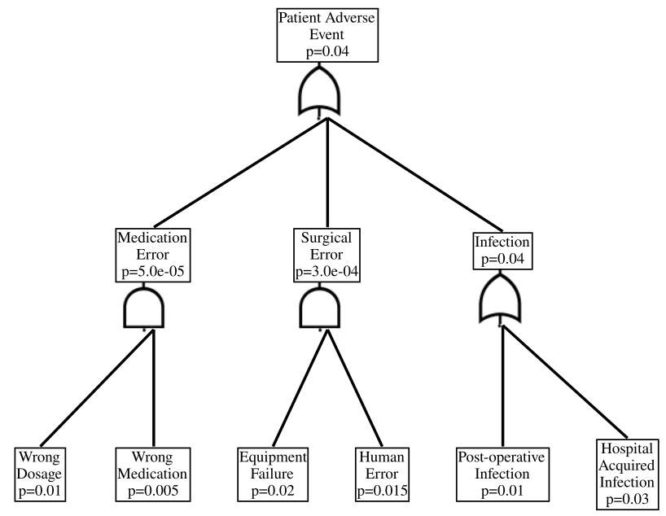

Introduction
The se-lib (Systems Engineering Library) offers a variety of diagrams that simply take in tuples of strings and numbers. In this post I want to dicsuss their quantitative fault tree diagrams.
Since I work in healthcare, I put together a healthcare-related example. The overall points of discussion are about statistical, however.
import selib as se
# Healthcare computed fault tree given probabilities for basic events
healthcare_fault_tree = [
("Patient Adverse Event", "or", '', ["Medication Error", "Surgical Error", "Infection"]),
('Medication Error', 'and', '', ['Wrong Dosage', 'Wrong Medication']),
('Surgical Error', 'and', '', ["Equipment Failure", "Human Error"]),
('Infection', 'or', '', ["Post-operative Infection", "Hospital Acquired Infection"]),
('Wrong Dosage', 'basic', .01),
('Wrong Medication', 'basic', .005),
('Equipment Failure', 'basic', .02),
('Human Error', 'basic', .015),
('Post-operative Infection', 'basic', .01),
('Hospital Acquired Infection', 'basic', .03),
]
dot = se.draw_fault_tree_diagram_quantitative(healthcare_fault_tree, filename="healthcare_quantitative_fault_tree", format="svg")While the above code will run and produced the figure below as an SVG, it is strangely fragmented into a combination of dot and HTML references to logic gate SVG files. I tried a variety of options including rendering with Graphviz, converting to PNG and pulling it into Jupyter, and other stuff. In all cases the gates were missing, which is annoying. Below I have simply referenced a screenshot of the SVG.

Once you get over the misalignment of the rendered logic gates, we can start to interpret the above diagram. Each rectangular node is an event from an event space. These nodes have inputs which first go through a logic gate. There are two types of logic gates in this diagram.
| Logic Gate | Symbol |
|---|---|
| AND |  |
| (inclusive) OR |  |
For the purposes of discussion, let us also assign labels to the events (which we will assume are sets), and also note their marginal probabilities.
| Symbol | Description | Marginal Probability |
|---|---|---|
| \(A\) | Patient Adverse Event | 0.04035 |
| \(M\) | Medication Error | \(5.0 \times 10^{-5}\) |
| \(S\) | Surgical Error | \(3.0 \times 10^{-3}\) |
| \(I\) | Infection | \(0.04\) |
| \(D\) | Wrong Dosage | 0.01 |
| \(W\) | Wrong Medication | 0.005 |
| \(E\) | Equipment Failure | 0.02 |
| \(H\) | Human Error | \(0.015\) |
| \(O\) | Post-Operative Infection | 0.01 |
| \(Q\) | Hospital-Aquired Infection | 0.03 |
I want to now discuss how this table of probabilities relates to certain assumptions about probabilities.
Statistical Independence
The first assumption is statistical independence, which for a collection of events \(\{ E_i \}_{i=1}^n\) means that
\[\Pr \left[ \bigcap_{i=1}^n E_i \right] = \prod_{i=1}^n \Pr [E_i]\]
which is not an assumption we can always allow. Where it is used in the above quantitative fault tree pertains to the AND gates. There are two AND gates in the diagram.
The first AND gate (going from left-to-right) is the one which produces the probabiliy for a medication error. You’ll note that the propositions
\[M = D \cap W\]
and
\[\Pr [M] = \Pr [D] \Pr [W]\]
are assumed to hold in that the proposition
\[5 \times 10^{-5} = 0.01 \times 0.005.\]
The second AND gate feeds into the surgical error node. The probability of a surgical error is similarly assumed to satisfy
\[S = E \cap H\]
and
\[\Pr [S] = \Pr [E] \Pr [H]\]
due to observing that
\[3.0 \times 10^{-3} = 0.02 \times 0.015.\]
Sometimes statistical independence is a great assumption, but sometimes it is an assumption that we definitely should not make. When we cannot make the assumption of statistical independence of events we should consider a different approach.
Almost-Sure Pairwise Disjoint Events
Two events \(E_1\) and \(E_2\) are considered disjoint if-and-only-if
\[E_1 \cap E_2 = \emptyset\]
meaning that they have no elements in common. It could be said in this case that the events are mutually exclusive.
Two events \(E_1\) and \(E_2\) are considered almost-surely disjoint if-and-only-if
\[\mu \left( E_1 \cap E_2 \right) = 0.\]
for a choice of measure \(\mu\). This might look very similar to the disjoint case that we just covered. However, they are not the same. See Seilis (2022) for some examples, noting that for our purposes we would take \(\mu\) to be a probability measure.
If two sets of disjoint, then they are also almost-surely disjoint:
\[E_1 \cap E_2 = \emptyset \implies \mu \left( E_1 \cap E_2 \right) = 0\]
Switching to considering unions, related to the OR gates, it holds for two almost-surely disjoint events that
\[\Pr [E_1 \cup E_2] = \Pr [E_1] + \Pr[E_2].\]
You can verify that this countable additivity is used at the OR gates in the example diagram. Further, this type of result will hold for any countable collection of events (i.e. not just for two events).
Just like statistical independence, almost-sure disjointedness is not always an assumption we can make. It depends on the problem, which motivates us to want to find a more general mathematical tool.
Conclusions
se-lib’s quantitative fault trees assume statistical independence and almost-sure pairwise disjointedness for the collection of events being considered. In general these assumptions will not hold, but it depends on the problem. Other approaches such as Judea Pearl’s causal graphs combined with Bayesian networks (also developed by Pearl) could replace everything that I think is essential to these quantitative fault trees without loss of generality.